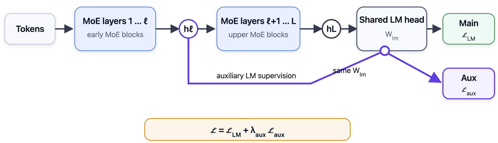
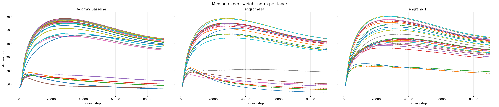
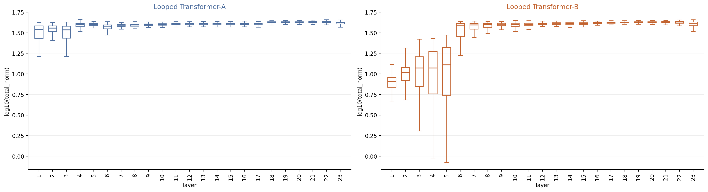

A brief recap. In our previous post, we introduced LLAL—Language Modeling Loss as an Auxiliary Loss—to address weak learning signals and expert undertraining in early MoE layers. Our hypothesis was that giving early layers a stable learning signal could help them establish useful functions. LLAL applies an auxiliary language-modeling objective to an early layer for a short initial training window and then removes it. In the settings reported there, the additional training computation was less than 0.3%. We observed:
- Lower validation loss,
- Ligher downstream scores
- Better early-layer load balance
- Persistent utilization of early experts after the auxiliary objective was removed.


What lasting function does LLAL help these experts establish—and how might that explain its broader training benefits? This follow-up investigates the hypothesis behind LLAL through rare-knowledge prediction and layer-wise expert masking. We then use Engram as a complementary architectural intervention to examine whether making a useful knowledge-related function available early supports the development of subsequent experts. The goal throughout is to better understand how LLAL may work.
A possible explanation of LLAL: its early auxiliary signal helps previously underused experts establish a persistent role in supporting rare knowledge. Subsequent layers may then build on that function and learn useful predictive computations without all specializing in acquiring the same knowledge. The Engram placement experiments add support to this interpretation: providing memory before L1 is accompanied by healthier expert development and broadly positive masking effects, whereas providing it before L14 aggravates early-layer undertraining.
Conventions. Layer numbers are zero-based. In the main comparison models, L0 is dense and L1 is the first MoE layer. We probe rare knowledge through low-frequency name continuations and factual answers, examining both knowledge-related dependence and the predictive contributions of the surrounding layers.
1. LLAL establishes an early rare-knowledge function
Our full-MoE experiments motivated this analysis. When the first layer was also an MoE layer, it did not exhibit the same weak-signal pattern and its weight norms appeared healthy, while other early MoE layers continued to receive weak signals as training progressed. This raised a functional question: what useful role can an early MoE layer acquire, and can establishing that role change the development of the layers that follow?
Earlier reports of bigram-prediction subnetworks and token- or n-gram-sensitive neurons in early feed-forward layers (Bigram Subnetworks and Neurons in Large Language Models) motivated an examination of memory-related predictions. Our aim is not only to locate a rare-knowledge dependence peak, but to understand how an early useful function relates to the broader layer-wise pattern.
Experimental setup
The main comparisons shown below are AdamW 2T and Muon models, each with and without LLAL. We also include two Engram models, with the memory module inserted at different depths.
| Task | Dataset | Prediction target |
|---|---|---|
| Entity-name completion | PopQA names: 6,417 | Remaining words of an entity name, given its first word |
| Factual recall | PopQA: 11,822 | Answer span in a question-answering or cloze prompt |
We use subject-name occurrence counts in FineWeb as a proxy for rarity, not as a measurement of exposure in the models’ actual training data. Rare subjects have at most 100 occurrences; common subjects have more than 1,000. Intermediate counts remain visible in the frequency-binned analysis.
For each tested layer, we zeroed the routed-expert output, retaining the shared expert, attention, and residual connection. This is a branch intervention, not deletion of the entire transformer layer. We scored the canonical target using teacher forcing and measured
Positive ΔNLL means that the branch was making a useful contribution to the target prediction: removing it made the target less likely. Values are in nats per target span. Negative values mean that removing the branch improved the target score under that condition.
We read these measurements in two ways. Absolute ΔNLL indicates a branch’s predictive contribution on the evaluated task. The rare/common contrast indicates whether that contribution is especially important for rare knowledge. A layer can contribute positively without showing strong rare-knowledge specialization.
The main name-completion analysis uses targets that the unmodified model predicts correctly at every target position under teacher forcing. We call these baseline-correct targets. The selected targets remain fixed across interventions on a given model, but can differ between models. This measures disruption of existing predictions, not free-generation accuracy. We also examined the subset correctly predicted by all compared models; the tables below present the model-specific analysis.
Previously underused early experts acquire a concrete function
The first four MoE layers illustrate the contrast. Each entry is rare-group ΔNLL / common-group ΔNLL.
| Task | Mask | AdamW 2T baseline | AdamW 2T LLAL | Muon Baseline | Muon LLAL |
|---|---|---|---|---|---|
| Name completion | L1 routed | -0.009 / -0.006 | 0.944 / 0.025 | 0.012 / 0.000 | 1.169 / 0.069 |
| Name completion | L2 routed | -0.021 / -0.018 | 2.158 / 0.108 | -0.029 / -0.009 | 0.427 / 0.049 |
| Name completion | L3 routed | 0.077 / 0.016 | 1.184 / -0.015 | 0.001 / -0.007 | 0.210 / 0.038 |
| Name completion | L4 routed | 0.165 / 0.068 | 0.644 / 0.030 | -0.018 / -0.020 | 0.284 / 0.049 |
| Factual QA | L1 routed | -0.004 / 0.001 | 0.713 / 0.233 | -0.023 / 0.000 | 0.882 / 0.269 |
| Factual QA | L2 routed | 0.031 / 0.056 | 3.154 / 0.865 | -0.023 / 0.009 | 0.343 / 0.137 |
| Factual QA | L3 routed | 0.172 / 0.151 | 1.355 / 0.228 | 0.072 / 0.051 | 0.298 / 0.188 |
| Factual QA | L4 routed | 0.295 / 0.102 | 0.849 / 0.222 | -0.006 / 0.021 | 0.228 / 0.145 |
In the AdamW 2T baseline, L1 and L2 have little effect on these predictions. Dependence begins to emerge farther into the prefix, around L3–L4, with initially modest effects that vary across layers. The issue is therefore not that the model never learns rare knowledge; rather, the first MoE layers remain largely uninvolved while a useful function begins to develop later.
With LLAL, the first MoE layers themselves become important. Removing L1 increases rare-name NLL by 0.944, compared with 0.025 for common names. Removing L2 has an even larger effect: 2.158 / 0.108 on name completion and 3.154 / 0.865 on factual QA. The Muon comparison shows the same early-layer recovery: its L1 rare-name effect changes from 0.012 without LLAL to 1.169 with LLAL.
These results connect the rescue in our previous post to an identifiable function: rare-knowledge prediction comes to depend on early routed experts that were previously weakly used.
Complete results: PopQA entity-name completion
Each cell reports rare-group ΔNLL / common-group ΔNLL. The Engram columns are discussed below. A dash denotes an unreported measurement.
| Layer | AdamW 2T baseline | AdamW 2T LLAL | Muon Baseline | Muon LLAL | Engram-L14 | Engram-L1 |
|---|---|---|---|---|---|---|
| L1 | -0.009 / -0.006 | 0.944 / 0.025 | 0.012 / 0.000 | 1.169 / 0.069 | 0.011 / 0.005 | 0.062 / 0.038 |
| L2 | -0.021 / -0.018 | 2.158 / 0.108 | -0.029 / -0.009 | 0.427 / 0.049 | 0.029 / 0.004 | 0.177 / 0.019 |
| L3 | 0.077 / 0.016 | 1.184 / -0.015 | 0.001 / -0.007 | 0.210 / 0.038 | 0.025 / 0.010 | -0.018 / -0.003 |
| L4 | 0.165 / 0.068 | 0.644 / 0.030 | -0.018 / -0.020 | 0.284 / 0.049 | 0.001 / 0.001 | 0.127 / 0.068 |
| L5 | 0.270 / 0.003 | 0.790 / 0.027 | 0.001 / 0.014 | 0.280 / 0.043 | 0.012 / 0.010 | 0.108 / 0.039 |
| L6 | 0.129 / -0.013 | 0.607 / -0.003 | -0.037 / -0.016 | 0.030 / -0.021 | 0.048 / 0.016 | 0.046 / 0.013 |
| L7 | 0.117 / 0.002 | 1.476 / 0.167 | 0.028 / -0.011 | 0.068 / -0.019 | 0.048 / 0.032 | 0.029 / 0.017 |
| L8 | 0.065 / 0.002 | 0.633 / 0.038 | 3.098 / 0.203 | 0.119 / -0.021 | -0.034 / -0.062 | -0.016 / 0.004 |
| L9 | 5.077 / 0.208 | 0.289 / 0.005 | -0.007 / -0.008 | 0.016 / -0.010 | 0.346 / -0.021 | 0.041 / 0.019 |
| L10 | 0.449 / 0.062 | 0.341 / 0.017 | 0.054 / 0.002 | 0.041 / 0.005 | 0.022 / -0.023 | -0.011 / 0.013 |
| L11 | 0.481 / 0.013 | 0.201 / 0.009 | 0.146 / 0.040 | 0.141 / -0.015 | -0.017 / -0.057 | 0.005 / 0.018 |
| L12 | — | — | — | — | 0.129 / 0.031 | 0.044 / 0.023 |
| L13 | — | — | — | — | 0.250 / 0.069 | 0.004 / 0.026 |
| L14 | — | — | — | — | 0.025 / 0.009 | 0.031 / 0.002 |
| L15 | — | — | — | — | 0.095 / 0.065 | 0.007 / 0.020 |
| L16 | — | — | — | — | 0.069 / 0.008 | 0.028 / 0.012 |
| L19 | — | — | — | — | 0.018 / -0.014 | 0.056 / 0.031 |
Complete results: PopQA factual question answering
Each cell reports rare-group ΔNLL / common-group ΔNLL. A dash denotes an unreported measurement.
| Layer | AdamW 2T baseline | AdamW 2T LLAL | Muon Baseline | Muon LLAL | Engram-L14 | Engram-L1 |
|---|---|---|---|---|---|---|
| L1 | -0.004 / 0.001 | 0.713 / 0.233 | -0.023 / 0.000 | 0.882 / 0.269 | 0.009 / 0.009 | 0.035 / 0.008 |
| L2 | 0.031 / 0.056 | 3.154 / 0.865 | -0.023 / 0.009 | 0.343 / 0.137 | 0.000 / 0.013 | 0.203 / 0.109 |
| L3 | 0.172 / 0.151 | 1.355 / 0.228 | 0.072 / 0.051 | 0.298 / 0.188 | -0.004 / 0.017 | 0.042 / 0.007 |
| L4 | 0.295 / 0.102 | 0.849 / 0.222 | -0.006 / 0.021 | 0.228 / 0.145 | 0.005 / 0.020 | 0.095 / 0.120 |
| L5 | 0.522 / 0.256 | 0.554 / 0.215 | -0.003 / 0.004 | 0.300 / 0.075 | 0.025 / 0.017 | 0.064 / 0.093 |
| L6 | 0.345 / 0.180 | 0.474 / 0.270 | -0.006 / 0.022 | 0.087 / 0.012 | 0.039 / 0.047 | 0.025 / 0.037 |
| L7 | 0.113 / 0.043 | 0.991 / 0.791 | 0.022 / 0.039 | 0.093 / 0.076 | 0.009 / 0.019 | 0.087 / 0.152 |
| L8 | 0.138 / 0.142 | 0.379 / 0.339 | 2.080 / 0.808 | 0.167 / 0.184 | 0.044 / 0.000 | 0.048 / 0.020 |
| L9 | 3.133 / 0.971 | 0.219 / 0.154 | 0.084 / 0.050 | 0.347 / 0.242 | 0.344 / 0.336 | 0.074 / 0.079 |
| L10 | 0.464 / 0.292 | 0.255 / 0.328 | 0.102 / 0.110 | 0.194 / 0.217 | 0.052 / 0.010 | 0.028 / 0.076 |
| L11 | 0.785 / 0.120 | 0.165 / 0.264 | 0.250 / 0.318 | 0.156 / 0.288 | 0.024 / -0.012 | 0.035 / 0.061 |
| L12 | — | — | — | — | 0.208 / 0.136 | 0.067 / 0.255 |
| L13 | — | — | — | — | 0.237 / 0.286 | 0.069 / 0.112 |
| L14 | — | — | — | — | 0.109 / 0.055 | 0.047 / 0.067 |
| L15 | — | — | — | — | 0.107 / 0.145 | 0.061 / 0.035 |
| L16 | — | — | — | — | 0.036 / 0.057 | 0.014 / 0.036 |
| L19 | — | — | — | — | 0.105 / 0.061 | 0.028 / 0.063 |
The layers after them remain useful without all specializing in rare knowledge
The broader pattern matters as much as the early rare/common contrast. In both LLAL models, every measured routed branch has positive ΔNLL for both the rare and common factual-QA groups. The model is not simply relying on an early memory-like component while leaving the rest of the tested prefix unused.
Later layers can contribute to prediction without showing the same degree of rare selectivity. For example, in AdamW 2T LLAL, the factual-QA effects at L8, L10, and L11 are 0.379 / 0.339, 0.255 / 0.328, and 0.165 / 0.264. These are positive contributions to both groups, rather than a repetition of the particularly strong rare/common contrast in the first MoE layers. The transition is not a hard boundary: some intervening layers still show substantial rare-knowledge dependence.
This gives a functional interpretation of the stable-signal hypothesis in our previous LLAL post. The auxiliary objective may help early experts establish a lasting role in acquiring or making rare knowledge available. Once this role is established, subsequent layers can build on it and learn other useful predictive computations. Without LLAL, the first MoE layers may fail to establish this role, even though rare-knowledge dependence eventually appears farther into the prefix. This offers a possible explanation for why a brief early intervention can affect learning beyond the directly supervised layers and remain useful after the auxiliary loss is removed.
The masking results identify dependence, while the causal link from an early stable function to healthier later learning remains our interpretation. They do not require every later layer to stop using rare knowledge, nor do they establish a fixed storage location for each fact.
2. Engram: complementary evidence for the LLAL interpretation
To further examine this account of LLAL, we turn to Engram. If LLAL helps by establishing a useful rare-knowledge function early, could an explicit memory module support similar downstream development? Engram provides a complementary architectural intervention: it supplies n-gram memory without relying on the first routed experts to acquire the entire function through auxiliary supervision. Its placement lets us examine a consequence of the proposed LLAL mechanism—whether making this function available early matters for the experts that follow.
We therefore compared two insertion positions. Before L1, the memory output is available to the entire MoE stack. Before L14, the earlier experts do not receive that output as an input. Our hypothesis was that early placement could support their learning, whereas later placement could provide an alternative predictive route without establishing a useful role for the preceding experts — which may harm early layer expert training.
The two Engram configurations differed only in insertion position; their other settings were similar to the AdamW baseline described in the previous post.
| Configuration | Insertion point |
|---|---|
| Engram-L14 | Before L14 (14th MoE layer, the 15th layer) |
| Engram-L1 | Before L1 (first MoE layer, the second layer) |
Both placements provide a strong rare-knowledge component
We first verified that the models actually use Engram for the rare-knowledge probe. On each model’s baseline-correct PopQA name targets, disabling the module gives:
| Model | Rare NLL: original → Engram off | Rare increase | Common NLL: original → Engram off | Common increase |
|---|---|---|---|---|
| Engram-L14 | 0.749 → 10.462 | +9.713 | 0.446 → 1.338 | +0.892 |
| Engram-L1 | 0.773 → 11.650 | +10.878 | 0.449 → 1.582 | +1.133 |
Both models depend strongly on Engram, with much larger effects for rare names than for common names. The frequency-binned results show a consistent decline in dependence as subject frequency increases:
| FineWeb subject count | Engram-L14: targets | Engram-L14: ΔNLL when disabled | Engram-L1: targets | Engram-L1: ΔNLL when disabled |
|---|---|---|---|---|
| 0 | 42 | +13.047 | 40 | +14.880 |
| 1–10 | 91 | +10.852 | 95 | +12.942 |
| 11–100 | 164 | +8.227 | 160 | +8.651 |
| 101–1,000 | 214 | +3.132 | 218 | +3.243 |
| 1,001–10,000 | 157 | +1.125 | 157 | +1.466 |
| >10,000 | 57 | +0.251 | 65 | +0.329 |
A zero count means no occurrence in the FineWeb counts used here.
Early placement supports useful contributions across subsequent experts
Engram-L1 produces a layer-wise functional pattern resembling the productive later layers in the LLAL models. In the factual-QA table, every measured routed branch in Engram-L1 has positive ΔNLL for both rare and common targets. These experts continue to help prediction even though Engram itself now provides a strong knowledge-related component.
The first part of the stack makes the contrast with Engram-L14 visible. Below are the rare / common factual-QA ΔNLL values from removing each routed branch:
| Branch removed | Engram-L1: rare / common | Engram-L14: rare / common |
|---|---|---|
| L1 | 0.035 / 0.008 | 0.009 / 0.009 |
| L2 | 0.203 / 0.109 | 0.000 / 0.013 |
| L3 | 0.042 / 0.007 | -0.004 / 0.017 |
| L4 | 0.095 / 0.120 | 0.005 / 0.020 |
| L5 | 0.064 / 0.093 | 0.025 / 0.017 |
| L6 | 0.025 / 0.037 | 0.039 / 0.047 |
| L7 | 0.087 / 0.152 | 0.009 / 0.019 |
With Engram-L14, several of the earliest branches have much weaker effects: L2 is 0.000 / 0.013, L3 is −0.004 / 0.017, and L4 is 0.005 / 0.020. With Engram-L1, the corresponding values are 0.203 / 0.109, 0.042 / 0.007, and 0.095 / 0.120. Both have minor rarity selectivity. This is not a claim that every L1-placement effect exceeds every L14-placement effect.
This fits the proposed division of labor: the memory module supplies knowledge-related information, while subsequent experts learn to use and transform it rather than all independently acquiring the same rare knowledge.
The functional contrast is accompanied by opposite norm dynamics
The norm measurements provide a second view of the placement effect. Inserting Engram before L1 reduces norm collapse across most early MoE layers, whereas inserting it before L14 worsens the collapse relative to the baseline.

The training trajectories show the same contrast. Early expert weights continue to develop with Engram-L1, while more early layers show weak norms with Engram-L14.


Thus, the placement effect is visible in both expert norms and expert masking: early insertion is accompanied by healthier norm dynamics and useful contributions throughout the measured factual-QA layer profile; later insertion aggravates norm collapse and leaves several of the earliest branches weakly involved. Norms alone would not establish function—the masking measurements are what connect this comparison to prediction.
Similar to LLAL, but not the same
The Engram results provide complementary support for this account of LLAL, rather than replacing it with a separate architectural story. In the LLAL models, previously underused early experts acquire a rare-knowledge role, while subsequent measured layers contribute to prediction without all showing the same specialization. Engram-L1 supplies an explicit memory component and is likewise accompanied by useful contributions across subsequent experts. The shared pattern is an early knowledge-related function alongside productive later-layer development—not that every expert becomes another rare-knowledge store.
The difference is how that early function is implemented. LLAL is a temporary training objective: after it is removed, the learned function remains in the original model. Engram is an additional architectural module that stays in the forward path. Its placement therefore matters directly: putting it before L14 does not reproduce the early functional starting point provided by LLAL or Engram-L1.
This architectural contrast strengthens the functional interpretation of LLAL's original stable-signal hypothesis. An early source of useful knowledge-related features may improve the learning problem faced by the layers after it. A later memory source may instead reduce the value of some preceding computations without providing those layers with the same useful input. Engram therefore supplies evidence from a different intervention for the proposed role of the early function established under LLAL. The comparison does not yet separate feature quality, training-signal stability, and changes in how subsequent layers read the residual stream.
The original Engram paper discusses effective depth using LogitLens and CKA. This provides a connection between the training-dynamics question raised by LLAL and architectural work on explicit memory. Our placement experiments contribute norm and masking evidence to that connection, while keeping the central question focused on LLAL: how can establishing useful computation early help the remaining experts develop?
3. Summary
Our previous post showed that LLAL can rescue undertrained early MoE experts. This follow-up identifies an important role they acquire: the model comes to rely on them for rare knowledge. The remaining layers also contribute to prediction, without each needing to reproduce the same rare-knowledge specialization. Without LLAL, the first MoE layers remain weakly used. In the AdamW comparison, dependence begins to emerge farther into the prefix, around L3–L4, with initially modest effects that vary across layers.
The Engram experiments strengthen this interpretation of LLAL through a different intervention. Both placements are strongly used for rare-knowledge prediction, but Engram-L1 supports healthier subsequent-layer development, while Engram-L14 worsens early-layer collapse. The contrast appears in expert norms and masking, providing complementary evidence that the early availability of a useful knowledge-related function matters—not simply the presence of memory somewhere in the network.
These findings return to the hypothesis that motivated LLAL in our previous post: giving early layers a stable learning signal may help them establish useful functions that persist beyond the auxiliary objective. The rare-knowledge analysis gives a concrete candidate for such a function, and the Engram placement experiments provide complementary support for its importance to later-layer development. Together, they suggest how LLAL's brief early supervision could produce lasting benefits: by helping previously underused experts establish a useful role on which subsequent layers can build. The remaining question is how that initial supervision becomes sustained, task-relevant learning after LLAL is removed.
A note on interpretation. It is difficult to divide a neural network into submodules that are each solely responsible for one function. Our discussion of rare knowledge and a division of labor describes observed dependencies and a possible interpretation, not an exclusive assignment of functions to layers. We also do not claim that LLAL and Engram lead to similar learned representations or functional endpoints. The Engram experiments provide complementary support for the hypothesis behind LLAL, rather than evidence that the two interventions produce equivalent models.
Outlook: loop design. The same perspective motivates a question for looped transformers: how does the choice of repeated layers affect the establishment of early functions and the development of subsequent computation?


We are continuing to investigate these questions with further experiments.
Citation
Please cite the original blog.
@misc{jin2026llalmoe,
title = {Mitigate Silent Expert Death In Ultra-Sparse MoE},
url = {https://alltoall.notion.site/save-lower-layer-moe-experts-llal},
author = {Jin, Hongye and Li, Linwei and Han, Xiaotian and Liu, Xin and Wen, Haoyang and Zhao, Tuo and Yin, Qingyu and Huang, Binxuan},
journal = {Notion Site},
year = {2026},
month = {July},
}We are still actively investigating the training dynamics. For questions or feedback, please contact us at mooler0410@gmail.com.